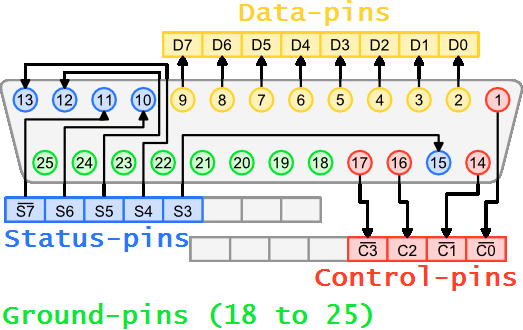

| WR Home Topic Home | Chapter: 1 |
| <Previous | Next> |
Chapter 01
Hello World in the Hardware World !
Page 1
The initial chapter (as the name suggests) is very important!Why: The chapter name is Chapter ZERO-ONE
To understand the basic concepts of micro-controller based programming.... let’s make it simpler, forget the microcontroller.
Let’s make some assumptions with desktop computer. Imagine that you have a PC and it is having the old fashioned printer port. The printer port was used to connect the printer to the PC in olden times (prior to the USB revolution!). The rear part of the PC had a special 25-pin connector (un-like the USB port, which has only 4 pins). The connector was D-shaped (so that someone can’t connect it in a wrong way, Just like you can only connect the USB pen-drive when it matches the connector in the right way). It was also called as parallel port.
Data Direction: Most data was transmitted from the PC to the printer and sometimes some data, was transmitted from the printer to the PC. If the printer was out of paper, then it used some pins to indicate that. Printer is a electro-mechanical device and computer is an electronic device. The computer can send the data too fast, the printer can’t print that fast, so printer stores the data in memory-buffer. But when the buffer overflows the printer can inform the computer that, stop sending the data for some time.
All the signals going from PC to printer are considered as output signals. All the signals/pins/wires carrying information from printer to PC are called input pins. So we name the pins w.r.t. PC, if pins takes signals in the PC they are input pins. Some pins may be bidirectional as well, but it would be well defined that for that particular instant of time they will act as input or output.

Just have a look at the above diagram. The pins in yellow are output pins (pins number 2 to 9). The pins in green (pins 18 to 25) are for ground (zero volt). For now, we will only consider these pins.
Lets consider the simplified diagram:-
| WR Home Topic Home | Chapter: 1 |
| <Previous | Next> |